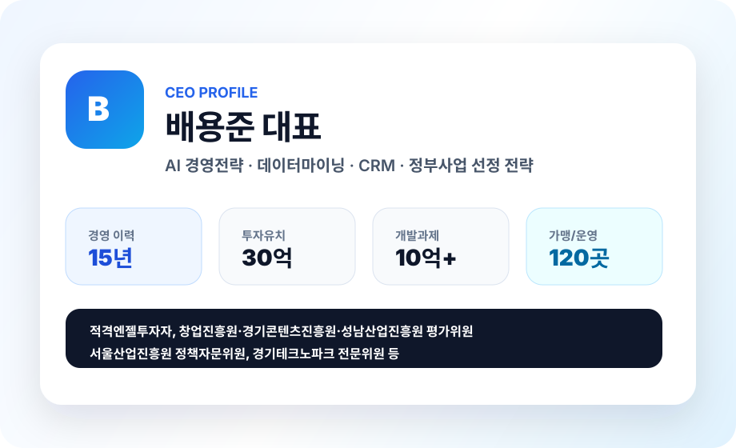
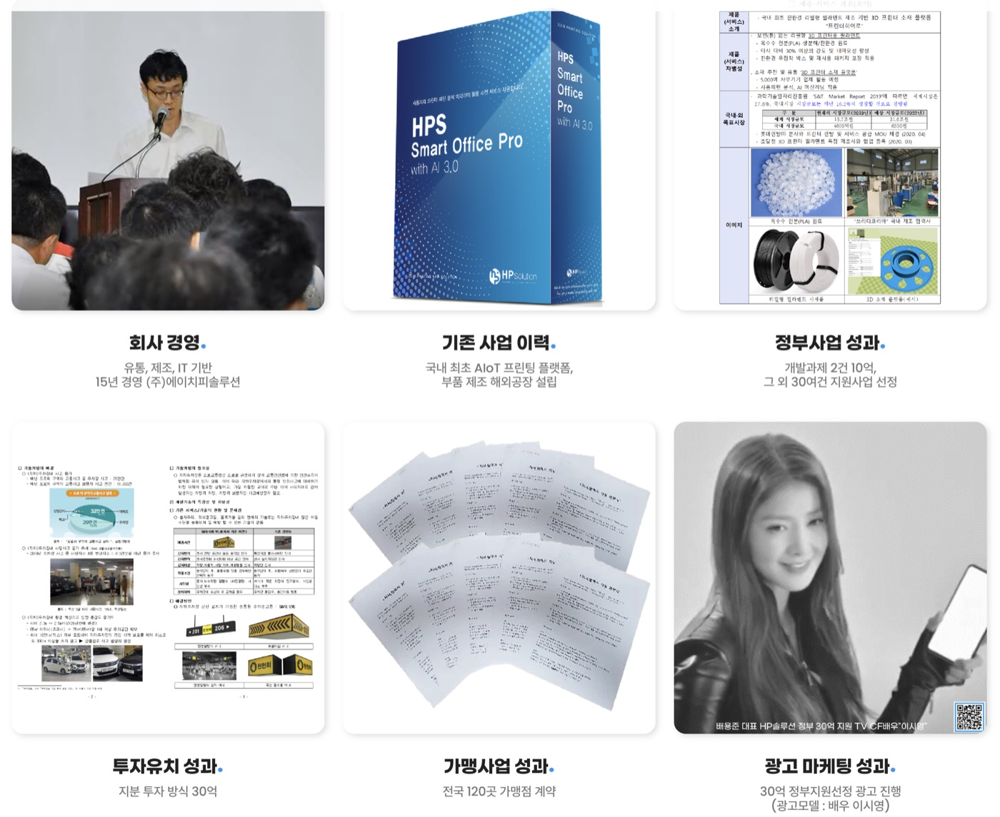
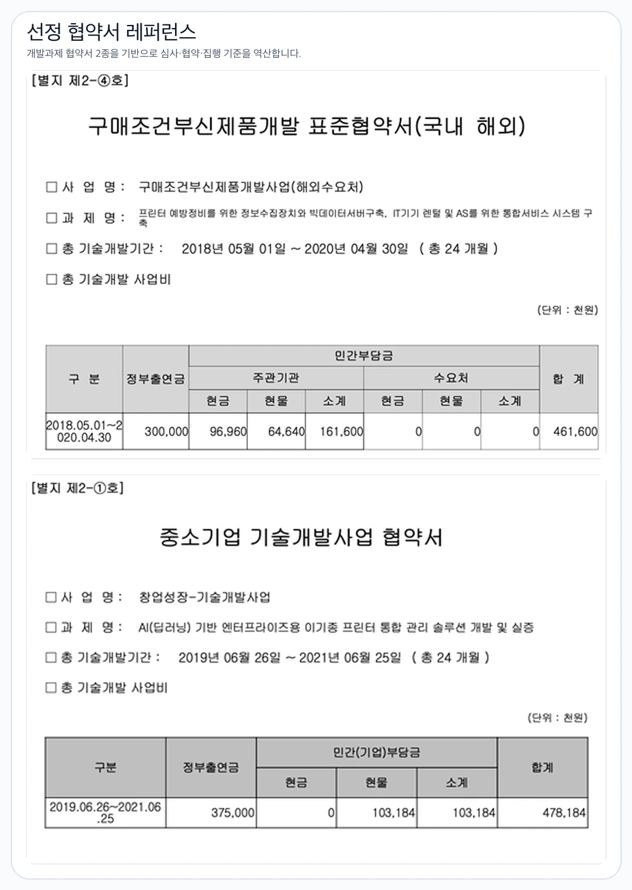
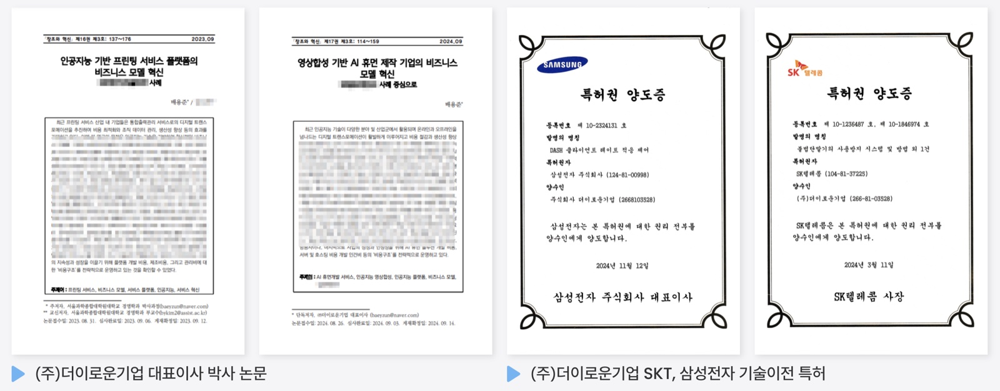

100% 인하우스 작성
외주 대필이 아니라 기업 인터뷰, 자료 분석, 공고 해석, 작성 방향을 내부에서 연결합니다.
단순 대필이 아니라 창업·투자·기술사업화 경험, 선정 샘플, 공고 데이터, 특허 기술이력을 연결해 평가자가 확인할 수 있는 구조로 정리합니다.
AI 경영전략, 데이터마이닝, CRM을 기반으로 프린팅 AIoT 플랫폼, 해외공장, 가맹 120곳, 30억 투자유치, 정부 개발과제를 수행한 경험을 사업계획서에 반영합니다.


주요성과, 회사소개서, 협약서, 선정 샘플, 개발 컨설팅 사례를 확인해 사업계획서의 근거 자료로 정리합니다.
배용준 대표가 기업 경영 당시 50여 가지 30억 이상의 선정 경험과 해외 공장 설립등의 경험 기반으로 우리 기업의 문제정의, 기술성, 시장성, 사업화 가능성을 비교 작성합니다.

해외공장, 수출, 플랫폼, 투자유치, 프랜차이즈 운영 경험을 바탕으로 기업의 강점이 과장 문장이 아니라 실행 근거로 읽히도록 구성합니다.
외주 대필이 아니라 기업 인터뷰, 자료 분석, 공고 해석, 작성 방향을 내부에서 연결합니다.
1,300개 기관 공고와 기업 자료를 함께 비교해 현재 지원할 과제와 보류할 과제를 나눕니다.
대표 인터뷰와 현장 자료를 통해 공고 문구에 맞지 않는 표현을 기업 언어에서 심사 언어로 바꿉니다.
프린팅 플랫폼, AIoT, 제조·유통, 투자유치 경험을 통해 기술성과 사업성이 끊기지 않게 연결합니다.
협약, 집행, 보완, 발표 대응까지 연결되도록 문서 안의 약속과 증빙자료를 맞춥니다.
NDA 자료와 공개 가능한 성과를 나눠 상담 단계에서 원본 확인 범위를 정합니다.
더이로운기업이 경험하고 성공한 케이스 기반으로 100% 인하우스로 진행합니다.
사업자, 연구전담부서, 인증, 재무자료처럼 공고 지원 전 기본 신뢰도를 정리합니다.
초기창업패키지, 디딤돌, 바우처처럼 빠르게 성과를 남길 수 있는 과제를 먼저 연결합니다.
PoC, 특허, 실증, 매출자료를 묶어 기술성·시장성의 근거를 강화합니다.
도약패키지, TIPS, 스케일업팁스처럼 성장 단계 자금을 기업 지표와 맞춰 준비합니다.
투자유치, 해외진출, 특례상장까지 후속 기업가치 상승 경로를 문서에 남깁니다.
기업 자료가 들어오면 컨시어지가 고객 언어로 다시 정리하고, 분석, 수정, 공고 로드맵, 매칭, 신청, 관리로 이어갑니다.
대표 인터뷰와 자료를 받아 업종, 기술, 매출, 인증, 실적을 먼저 정리합니다.
기업 표현을 심사 기준에 맞는 문장과 증빙자료 구조로 바꿉니다.
지금 지원할 공고와 다음에 준비할 공고를 단계별로 구분합니다.
자격요건, 제외조건, 가점, 마감일을 비교해 지원 우선순위를 정합니다.
사업계획서, 신청서, 제출 서류를 공고 양식에 맞춰 정리합니다.
보완 요청, 발표 준비, 협약 이후 자료까지 추적합니다.
AI 프린팅 서비스 플랫폼, AI 휴먼 제작 비즈니스 모델 연구와 SKT·삼성전자 기술이전 특허 경험을 바탕으로 기술성, 권리화 전략, 사업화 가능성을 해석합니다.

회사소개서, 기존 사업계획서, 준비 중인 공고가 있으면 대표 이력·성과·특허 기술 관점까지 연결해 작성 방향을 잡아드립니다.